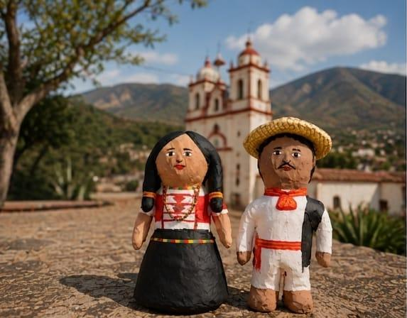
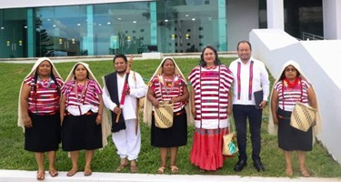
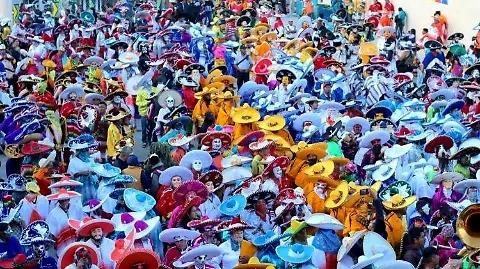
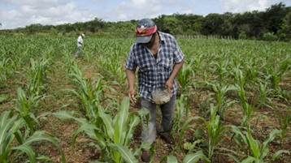
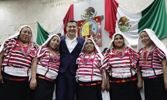

Santo Tomás Ocotepec
Muñeca artesanal inspirada en la identidad cultural y vestimenta tradicional del pueblo mixteco de Santo Tomás Ocotepec, Tlaxiaco Oaxaca.
Descripción
Esta pieza artesanal representa la riqueza cultural, tradiciones y vestimenta típica del municipio, preservando el patrimonio cultural de la Mixteca oaxaqueña.
Historia de la vestimenta tradicional
La vestimenta tradicional de Santo Tomás Ocotepec representa la identidad cultural del pueblo mixteco.
En el Plan Municipal de Desarrollo se menciona la importancia de conservar “la vestimenta, el baile, la música y fiestas” como parte de las costumbres del municipio.
Tradicionalmente, las mujeres utilizaban huipiles bordados a mano, faldas largas y rebozos, mientras que los hombres portaban ropa de manta, sombrero y huaraches.
Los bordados incluyen figuras geométricas y elementos relacionados con la naturaleza y la cultura mixteca.
Actualmente esta vestimenta se utiliza principalmente en fiestas patronales, eventos culturales y celebraciones comunitarias.

Costumbres comunitarias
Santo Tomás Ocotepec conserva tradiciones comunitarias que fortalecen la organización, identidad y convivencia del pueblo mixteco.
Usos y costumbres
La organización política y social se realiza mediante asambleas generales comunitarias donde participa la población.
Tequio
Trabajo comunitario realizado sin recibir pago, con el objetivo de beneficiar al pueblo.
Lengua mixteca
Se conserva el respeto hacia la lengua originaria y las tradiciones culturales.
Ayuda mutua
Las familias mantienen prácticas de solidaridad y apoyo comunitario entre habitantes.
Estas prácticas fortalecen la identidad, el respeto comunitario y la convivencia social dentro del municipio.

Tradiciones y festividades
Las celebraciones tradicionales de Santo Tomás Ocotepec forman parte de la identidad cultural del pueblo mixteco y fortalecen la convivencia comunitaria.
Fiesta patronal
Celebración dedicada a Santo Tomás Apóstol con misas, música de banda, danzas, calendas y convivios comunitarios.
Día de Muertos
Las familias colocan altares y ofrendas para recordar a sus seres queridos.
Mayordomías
Familias y personas organizan actividades religiosas y festivas para la comunidad.
Estas festividades ayudan a conservar las raíces culturales y tradiciones del municipio.
Videos y contenido cultural
Explora videos relacionados con las tradiciones, cultura y costumbres de Santo Tomás Ocotepec y la región Mixteca.


Rutas turísticas y senderismo
Santo Tomás Ocotepec forma parte de la región Mixteca Alta de Oaxaca y cuenta con recorridos culturales, caminos comunitarios y paisajes naturales ideales para conocer la riqueza cultural y tradicional de la comunidad.
Ruta Santo Tomás Ocotepec – Heroica Ciudad de Tlaxiaco
Uno de los recorridos más utilizados por visitantes interesados en conocer la cultura mixteca y los paisajes montañosos de la región.
- Comunidades rurales
- Áreas agrícolas
- Bosques y paisajes naturales
Caminos comunitarios y senderismo
Existen senderos rurales utilizados por habitantes de la comunidad para conectar rancherías y zonas agrícolas.
- Ruta Yutesuji – Ndu tee yoo
- Distancia aproximada: 3 km
- Tipo: senderismo rural
Ruta cultural mixteca
Santo Tomás Ocotepec puede integrarse con otros municipios cercanos que conservan textiles, gastronomía y tradiciones de la región mixteca.
Ubicación aproximada
Historias y leyendas
La tradición oral de Santo Tomás Ocotepec conserva relatos y creencias transmitidas de generación en generación, formando parte importante de la identidad cultural mixteca.
Leyenda de los cerros protectores
Personas mayores de la comunidad cuentan que algunos cerros alrededor del municipio son considerados “lugares sagrados” o protectores del pueblo.
Según la tradición oral mixteca, estos lugares poseen energía espiritual y deben respetarse, especialmente durante la noche o temporadas de lluvia.
Estas creencias se relacionan con la cosmovisión indígena mixteca.
Historias de apariciones en caminos antiguos
Habitantes narran historias sobre apariciones nocturnas en caminos rurales y veredas antiguas, especialmente en zonas alejadas del centro de la comunidad.
Algunas leyendas mencionan sombras, luces o personas vestidas de blanco que aparecen durante la madrugada.
Estas historias forman parte de las narraciones tradicionales transmitidas entre generaciones.
Relatos sobre espíritus de la naturaleza
En comunidades mixtecas como Santo Tomás Ocotepec existen creencias relacionadas con cuevas, manantiales y árboles antiguos.
Según la tradición, en estos lugares habitan espíritus protectores o seres sobrenaturales.
Estas historias se cuentan principalmente durante reuniones familiares y festividades comunitarias.
Actividad económica y población
La economía de Santo Tomás Ocotepec se basa principalmente en actividades agrícolas y comunitarias que forman parte de la vida cotidiana de la región mixteca.
Agricultura
La principal actividad económica es la producción de maíz y frijol, cultivos fundamentales para las familias del municipio.
Ganadería y comercio
También existen actividades de ganadería, comercio local y trabajo artesanal.
Migración y remesas
Muchas familias complementan sus ingresos mediante migración y remesas enviadas desde otras ciudades o países.
Número aproximado de habitantes
Habitantes registrados en el Censo de Población y Vivienda 2020.


Igualdad de género y prevención de la violencia
El municipio impulsa acciones enfocadas en promover la igualdad, el respeto y la protección de los derechos de mujeres y niñas.
Igualdad de derechos
El Plan Municipal de Desarrollo incluye el eje transversal de Igualdad de Género, promoviendo el respeto a los derechos de las mujeres y la participación igualitaria.
Talleres y campañas
Se contempla la coordinación con instituciones estatales para realizar talleres, campañas informativas y actividades de sensibilización.
Prevención de violencia
Estas medidas buscan fortalecer la seguridad, el bienestar y la protección de mujeres y niñas del municipio.
Artesanos y cultura comunitaria
En Santo Tomás Ocotepec existen personas dedicadas a los textiles, bordados y actividades culturales relacionadas con la tradición mixteca. Aunque el Plan Municipal no proporciona nombres específicos de artesanos o guías turísticos, menciona la importancia de conservar la cultura, el arte y las tradiciones comunitarias. Para obtener información directa y actualizada se recomienda acudir al Ayuntamiento Municipal o autoridades comunitarias.